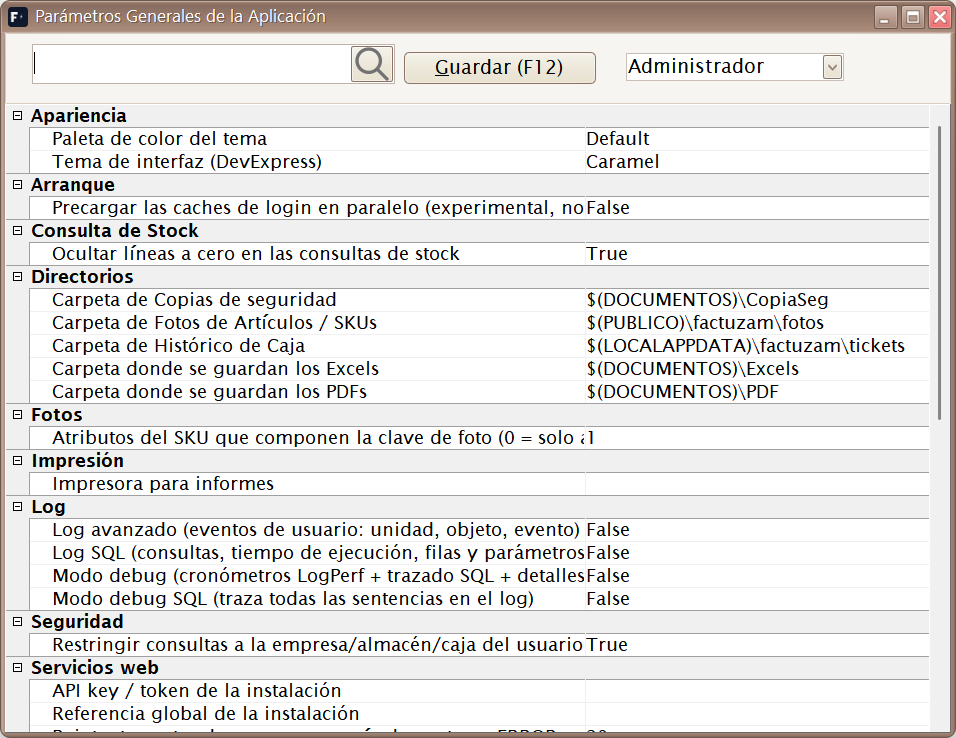
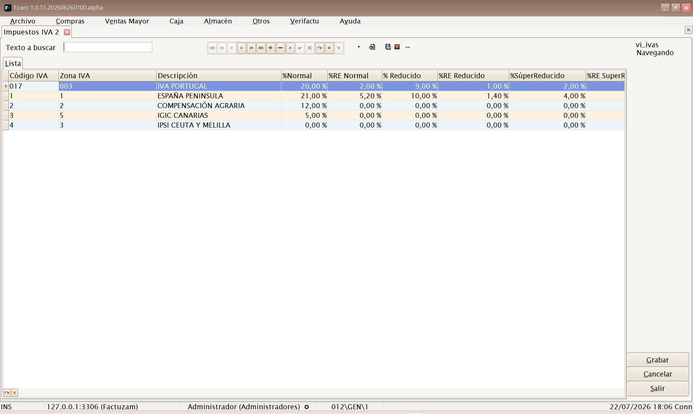
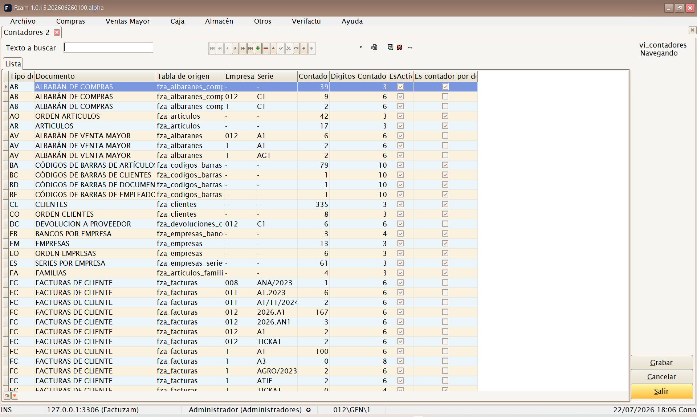
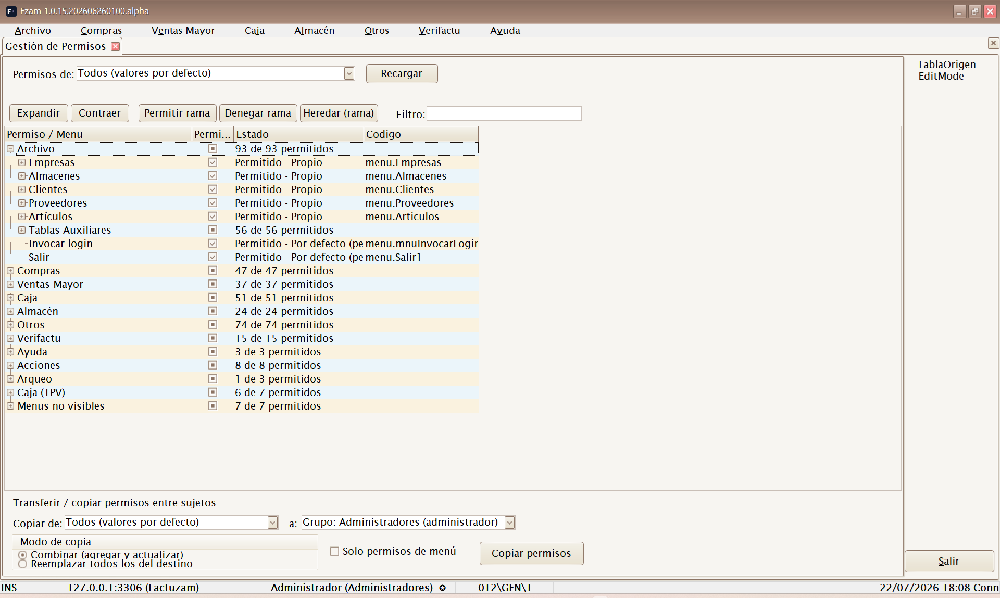
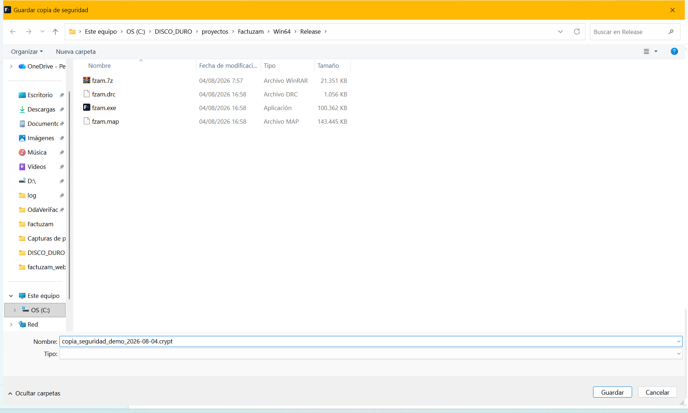
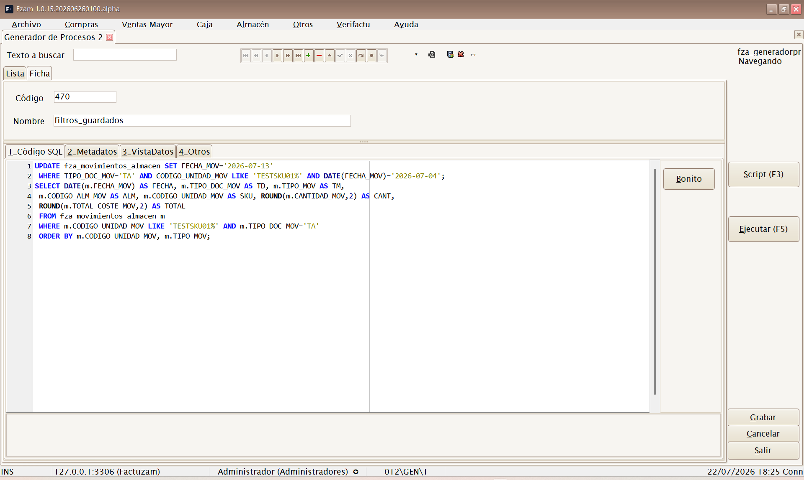
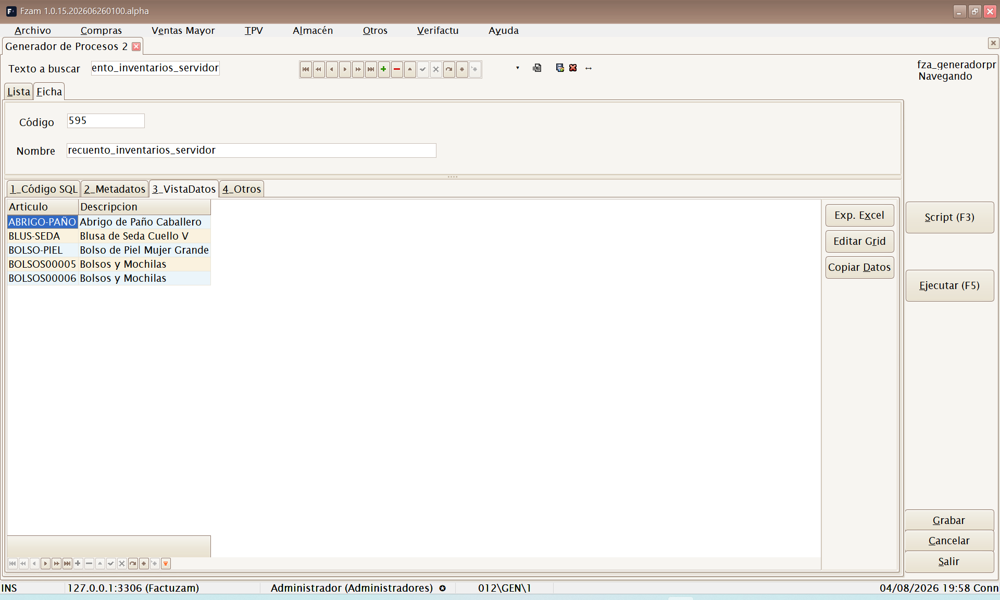

07 · Menú Otros
El menú Otros agrupa la administración y configuración de la aplicación: parámetros globales, impuestos, contadores de numeración, seguridad (usuarios y permisos), copias de seguridad y herramientas avanzadas. Son opciones que usa principalmente el administrador.
Estructura del menú:
Otros
├── Parámetros del entorno
├── Grupos de IVA
├── Impuesto IVA
├── Contadores
├── Usuarios, Grupos y Perfiles
│ ├── Usuarios
│ ├── Empleados
│ ├── Grupos
│ ├── Perfiles
│ ├── Permisos
│ └── Permisos (tabla)
├── Hacer Copia de Seguridad
├── Recuperar Copia de Seguridad
└── Generador de ProcesosParámetros del entorno

▢ Captura pendiente — Parámetros Generales de la Aplicación.Atajo de menú: [Ctrl]+[F10]
Pantalla de Parámetros Generales de la Aplicación. Centraliza la configuración global de Factuzam: comportamiento por defecto, rutas, opciones de impresión y de documentos, valores predeterminados de la empresa de trabajo, etc.
Son ajustes que afectan a toda la instalación. Cámbialos con conocimiento de causa; ante la duda, consulta con quien implantó la aplicación.
Grupos de IVA
Atajo de menú: [Ctrl]+[O]
Define agrupaciones de tipos de IVA (zonas/regímenes de IVA). Sirve para asociar a empresas, clientes y artículos el conjunto de tipos impositivos que les corresponde (p. ej. IVA peninsular frente a otros regímenes).
Impuesto IVA

▢ Captura pendiente — Tipos de IVA y recargo de equivalencia.Atajo de menú: [Ctrl]+[I]
Mantiene los tipos de IVA concretos y sus porcentajes (general, reducido, superreducido…), junto con el recargo de equivalencia asociado a cada uno. Es la base del cálculo de impuestos en compras y ventas.
Los porcentajes de IVA los fija la normativa. No los cambies salvo que cambie la ley; un tipo mal configurado afecta a toda la facturación.
Contadores

▢ Captura pendiente — Contadores de numeración por serie.Atajo de menú: [Ctrl]+[R]
Gestiona los contadores de numeración de los documentos (facturas, albaranes, pedidos…) por serie y empresa. Cada documento toma su número correlativo del contador correspondiente.
Los números de factura deben ser correlativos y sin huecos por exigencia legal. No retrocedas ni reutilices contadores de facturación.
Usuarios, Grupos y Perfiles
Submenú de seguridad. Define quién entra a la aplicación y qué puede hacer.
Usuarios
Atajo de menú: [Ctrl]+[H]
Alta y mantenimiento de los usuarios que acceden a Factuzam (los que introducen credenciales en el login). Incluye su contraseña, estado y el perfil/grupo que determina sus permisos.
Empleados
(Sin atajo de menú; se abre desde el menú.)
Ficha de empleados del negocio (datos de personal). Puede vincularse a usuarios y a operaciones de caja para saber quién realiza cada venta.
Grupos
Atajo de menú: [Ctrl]+[J]
Grupos de usuarios para asignar permisos en bloque (p. ej. Cajeros, Administración, Encargados). Un usuario hereda los permisos de su grupo.
Perfiles
Atajo de menú: [Ctrl]+[W]
Perfiles de configuración que personalizan la apariencia y el comportamiento de las pantallas (columnas visibles, captions, opciones) para un usuario o grupo.
Permisos

▢ Captura pendiente — Gestión de Permisos en árbol.Atajo de menú: [Ctrl]+[Q]
Pantalla de Gestión de Permisos en forma de árbol: activa o desactiva, por grupo/usuario, el acceso a cada menú y acción de la aplicación. Es la forma recomendada de configurar la seguridad de forma visual.
Permisos (tabla)
(Sin atajo de menú; se abre desde el menú.)
La misma información de permisos presentada en formato tabla (rejilla), para edición masiva o revisión rápida de muchos permisos a la vez.
Hacer Copia de Seguridad

▢ Captura pendiente — Diálogo de copia de seguridad.Atajo de menú: [Ctrl]+[Y]
Lanza una copia de seguridad de la base de datos. Genera un fichero de respaldo con todos los datos (clientes, artículos, documentos, stock…).
Realiza copias con regularidad y guárdalas en un lugar seguro y externo al equipo. Es tu única red de seguridad ante un fallo de disco o un borrado accidental.
Recuperar Copia de Seguridad
Atajo de menú: [Ctrl]+[Z]
Permite restaurar la base de datos a partir de un fichero de copia o ejecutar un script de mantenimiento sobre la base de datos.
⚠️ Operación delicada. Restaurar una copia sobrescribe los datos actuales. Asegúrate de elegir el fichero correcto y de que nadie esté trabajando. Ante la duda, haz primero una copia del estado actual.
Generador de Procesos

▢ Captura pendiente — Generador de Procesos con la pestaña Código SQL.Atajo de menú: [Ctrl]+[G]
Herramienta avanzada para administradores: permite escribir, guardar y ejecutar procesos SQL sobre la base de datos — desde un listado a medida que no exista en los menús hasta una corrección masiva de datos o la llamada a un procedimiento almacenado.
Cada proceso se guarda como un registro más (con Código y Nombre de proceso), de modo que los listados habituales quedan en una biblioteca reutilizable: se localizan en la Lista, se abren y se vuelven a ejecutar.
Las pestañas de la pantalla
| Pestaña | Contenido |
|---|---|
| 1_Código SQL | Editor SQL con coloreado de sintaxis donde se escribe el proceso. El botón Bonito reformatea/indenta la sentencia. |
| 2_Metadatos | Árbol con los objetos de la base de datos (tablas, vistas y procedimientos) para apoyarse al escribir. Con sub-pestañas Estructura Metadato (DDL del objeto) y Vista Contenido (datos del objeto). |
| 3_VistaDatos | Rejilla con el resultado de la última ejecución. |
| 4_Otros | Auditoría del proceso (quién y cuándo lo creó/modificó). |
Botones principales: Ejecutar (F5) y Script (F3) (carga un
fichero .sql/.txt del disco como proceso nuevo, tomando su nombre del
fichero). El menú contextual del editor ofrece además Seleccionar Todo,
Ejecutar, Comentar y Abrir Script.
Cómo sacar un listado
- Pulsa Insertar registro y da Código y Nombre al proceso
(p. ej. L001 — Ventas por familia).
- En 1_Código SQL escribe la consulta
SELECT …. Ayudas:
- En 2_Metadatos, el árbol muestra todas las tablas y vistas;
doble clic sobre una tabla/vista enseña su contenido en Vista
Contenido, y con el foco en el árbol [Ctrl]+[A] envía la
estructura del objeto al editor.
- Bonito reformatea el SQL para hacerlo legible.
- Pulsa Ejecutar (F5):
- Si hay texto seleccionado en el editor, se ejecuta **solo la
selección**; si no, se ejecuta todo el contenido.
- El resultado se abre en 3_VistaDatos, con el número de registros
y el tiempo de ejecución en el panel de resultados.
- Trabaja el resultado en la rejilla (ordenar, agrupar, filtrar) y
sácalo con Exp. Excel (exporta a Excel) o Copiar Datos (al portapapeles).
- Pulsa Grabar para conservar el proceso y repetir el listado cuando
haga falta.

▢ Captura pendiente — Pestaña VistaDatos con un resultado y el botón Exp. Excel.El botón Editar Grid habilita la edición directa del resultado sobre la base de datos. Es útil para correcciones puntuales, pero modifica datos reales: úsalo con la misma cautela que un UPDATE.
Cómo ejecutar un proceso (comandos y procedimientos)
- Comandos (
UPDATE,INSERT,DELETE…): se escriben igual y se
lanzan con Ejecutar (F5). En lugar de rejilla, el panel de resultados muestra las filas afectadas y el tiempo.
- Procedimientos almacenados: en el árbol de 2_Metadatos, haz
doble clic sobre el procedimiento: la aplicación genera en el editor
la plantilla CALL procedimiento(…) con sus parámetros comentados
(nombre y tipo de cada uno). Sustituye los comentarios por los valores y
pulsa Ejecutar (F5). Si el procedimiento devuelve filas, se muestran
en VistaDatos; si no, se informa como comando.
- Varias sentencias a la vez: si el editor contiene varias sentencias
separadas por ;, cada una se ejecuta en su propia pestaña de
resultado (una rejilla por consulta, un registro de filas afectadas
por comando).
- Ejecutar por partes: selecciona una sentencia concreta y pulsa F5
para lanzar solo esa parte — la forma más segura de probar un proceso largo paso a paso.
Pensado para usuarios técnicos. Una sentencia mal escrita puede modificar o borrar datos: haz copia de seguridad antes de un proceso masivo, prueba primero con un
SELECTque muestre las filas que vas a tocar, y ejecuta por selección antes que el script completo.